철도신호산업기사 (2003-05-25 기출문제)
1과목: 전자공학
1. 2000kHz에 공진하는 공진회로 코일의 Q가 100 이라 하면, 회로를 통과하는 -3dB의 주파수 대역폭은 몇 kHz 인가?
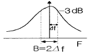
- 1900∼2100
- 2010∼2015
- 1980∼2000
- 1990∼2010
(정답률: 알수없음)

2. 멀티바이브레이터에 대한 설명 중 틀린 것은?
- 쌍안정 멀티바이브레이터의 결합은 직류적으로 구성되어 있다.
- 단안정 멀티바이브레이터는 외부 트리거 전원을 필요로 한다.
- 멀티바이브레이터의 안정상태는 전압의 크기에 따라 결정된다.
- 결합회로의 임피던스에 따라 무안정, 단안정, 쌍안정으로 구분된다.
(정답률: 알수없음)
3. BCD코드에 3개의 패리티 비트를 추가하여 오류 및 검출기능을 가지는 코드는?
- 3초과 코드
- 해밍 코드
- 교번 2진 코드
- 2 out of 5 코드
(정답률: 알수없음)
4. 차동증폭기에 대한 설명이다. 옳지 않은 것은?
- 연산증폭기의 입력측에 주로 사용된다.
- 반전 및 비반전의 두 입력의 차에 해당하는 신호를 증폭한다.
- 이상적인 차동증폭기는 동위상 제거비가 0 이어야 한다.
- 차동증폭기의 성능은 동위상 제거비의 크기에 따라 결정된다.
(정답률: 알수없음)
5. 변조의 목적이 아닌 것은?
- 정보신호를 전송에 알맞은 형태로 변환한다.
- 정보신호를 먼 곳에 효율 좋게 전송해 준다.
- 정보신호가 높은 주파수로 변조되므로 긴 파장의 신호를 얻는다.
- 간섭에 대한 면역성을 크게 해준다.
(정답률: 알수없음)
6. 그림과 같은 RL회로에 각주파수가 ω인 교류파형을 인가하였을 때, 주파수 변화에 따른 출력파형의 특성은 어떠한가?
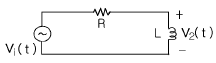
- 저주파성분은 통과시키고, 고주파성분은 통과시키지 않는다.
- 고주파성분은 통과시키고, 저주파성분은 통과시키지 않는다.
- 고주파성분과 저주파성분 모두를 통과시키지 않는다.
- 고주파성분과 저주파성분 모두를 통과시킨다.
(정답률: 알수없음)
7. 8진수인 수 153을 4진수로 변환하면?
- 107
- 153
- 1223
- 1321
(정답률: 알수없음)
8. 펄스 변조방식을 설명한 것이다. 틀린 것은?
- PAM이란 펄스의 주기, 폭 등은 일정하고 그 진폭을 입력 신호전압에 따라서 변화시키는 방식이다.
- PWM이란 펄스의 진폭, 폭 따위는 일정하고 펄스의 위상을 입력신호에 따라 변화시키는 방식이다.
- PNM은 신호레벨에 따라 펄스 수를 변화시킨다.
- PFM은 신호레벨에 따라 펄스의 주파수가 변화되는 것이다.
(정답률: 알수없음)
9. P형 반도체에서 페르미준위(Fermi level)는 온도에 어떠한 영향을 받는가?
- 온도에 관계없이 금지대의 중앙에 위치한다.
- 온도가 상승하면 금지대의 중앙에 위치한다.
- 온도가 하강하면 금지대의 중앙에 위치한다.
- 온도가 하강하면 전도대쪽으로 위치한다.
(정답률: 알수없음)
10. 검파기 중 SSB에 사용되는 것은?
- 링 검파기
- 다이오드 검파기
- 양극 검파기
- 헤테로다인 검파기
(정답률: 알수없음)
11. 자유전자의 전하량 e 는 몇 C 인가?
- e= 9.1095×10-19
- e= 1.6021×10-19
- e= 9.1095×10-27
- e= 1.6721×10-27
(정답률: 알수없음)
12. 차동증폭기(differential amplifier)가 갖추어야 할 조건중 틀린 것은?
- 드리프트를 줄여야 한다.
- 차동이득을 작게 해야 한다.
- 동위상이득을 작게 해야 한다.
- CMRR을 크게 해야 한다.
(정답률: 알수없음)
13. 그림과 같은 회로의 입력으로 램프전압을 인가할 때 출력에는 어떤 전압이 나타나는가? (단, A는 연산증폭기이다.)
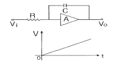
- 크기가 직선적으로 증가하는 전압
- 크기가 지수함수적으로 증가하는 전압
- 크기가 지수함수적으로 감소하는 전압
- 크기가 이차함수적으로 증가하는 전압
(정답률: 알수없음)
14. 10진수 (392)10을 BCD코드로 변환하면?
- (0011 1001 0010)BCD
- (0100 1001 0001)BCD
- (0100 1001 0010)BCD
- (0011 0111 0010)BCD
(정답률: 알수없음)
15. 증폭기의 저주파 응답을 결정하는 부분은?
- 전압 이득
- 트랜지스터 형태
- 공급 전압
- 결합 커패시터
(정답률: 알수없음)
16. 그림과 같은 증폭기의 입력전압과 출력전압의 위상은?
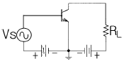
- 동위상이다.
- 90도의 위상차가 있다.
- 150도의 위상차가 있다.
- 180도의 위상차가 있다.
(정답률: 알수없음)
17. 발진회로에 대한 설명으로 틀린 것은?
- 윈브리지형 발진회로에서는 증폭기의 전압이득이 2 이상이어야 한다.
- 수정 발진회로는 주파수 안정도가 좋다.
- lβAl =1의 조건을 바크하우젠의 발진조건이라 한다.
- 비정현파 발진기에는 멀티바이브레이터, 블로킹 발진기, 톱니파 발생기 등이 있다.
(정답률: 알수없음)
18. 바이어스된 트랜지스터가 차단과 포화영역을 오가며 동작될 경우 이 트랜지스터는 어떠한 역할을 하는가?
- 선형 증폭기
- 스위치
- 가변용량
- 가변저항
(정답률: 알수없음)
19. 부궤환을 갖는 연산증폭기의 출력은 어떻게 변화하는가?
- 입력과 같다.
- 증가한다.
- 반전 입력으로 궤환한다.
- 비반전 입력으로 궤환한다.
(정답률: 알수없음)
20. 병렬 제어형 정전압 회로에 대한 설명으로 틀린 것은?
- 제어용 Tr은 부하와 병렬로 접속되어 있다.
- 소전류이고 부하 변동이 비교적 적은 경우에 사용된다.
- 직렬형과 동일한 출력전압 가변 범위를 얻으려면 제어소자 손실이 증대한다.
- 출력단자가 단락되면 제어소자가 파손된다.
(정답률: 알수없음)
2과목: 신호기기
21. 10[KVA]의 단상변압기의 퍼센트저항 강하가 2.5[%], 퍼센트 리액턴스 강하가 1.8[%]이다. 퍼센트 임피던스 강하는?
- 3.08[%]
- 4.08[%]
- 5.08[%]
- 6.08[%]
(정답률: 알수없음)
22. 슬립 4[%]인 유도 전동기의 정지시 2차 1상의 전압이 150[V] 이면 운전시 2차 1상 전압[V]은?
- 70
- 7
- 60
- 6
(정답률: 알수없음)
23. 전기 전철기의 특성은 전동기의 스립전류를 8.5[A]로 조정후 동작간에 100[kg]의 부하를 걸고 전환종료후 20[mm]의 위치에서 차차 부하를 증가하여 전환 종료시에는 500[kg]의 부하로 전환시 전환시간 및 동작전류는?
- 6초이하,7.5[A]이하
- 6초이하,9[A]이하
- 5초이하,10A이하
- 5초이하,9[A]이하
(정답률: 알수없음)
24. 고전압 대전력 정류기로 가장 적당한 것은?
- 회전변류기
- 수은정류기
- 전동발전기
- 벨트로
(정답률: 알수없음)
25. 변압기의 누설리액턴스를 줄이는 가장 효과적인 방법은?
- 권선을 분할하여 조립한다.
- 권선을 동심배치한다.
- 철심의 단면적을 크게한다.
- 코일의 단면적을 크게한다.
(정답률: 알수없음)
26. 역간폐색 수속이 이루어져야만이 출발신호가 현시될 수 있는 폐색방식은?
- 연동폐색
- 통표폐색
- 쌍신폐색
- 표권식
(정답률: 알수없음)
27. 직류 발전기의 단자 전압을 조정하려면 어느것을 조정 하는가?
- 방전저항
- 전기자저항
- 계자저항
- 기동저항
(정답률: 알수없음)
28. NS형 전기 전철기의 제어 계전기에 관한 설명이다. 맞는 것은?
- 거치형 24[V] 120[mA] NR4
- 삽입형 24[V] 120[mA] NR4
- 삽입형 24[V] 120[mA] NR6
- 자기유지형 24[V] 120[mA] NR4
(정답률: 알수없음)
29. 전기전철기를 반위로 수동취급한 다음 스윗치를 넣으면 전철기가 원상위치로 전환되는 이유중 가장 옳은 것은?
- WLR이 자기유지하고 있으므로.
- TR이 여자되어 있으므로.
- 전동기 회로에 콘덴서가 있으므로.
- 수동취급한 전철기 위치와 전철정자 위치가 다르므로.
(정답률: 알수없음)
30. 원방 신호기가 진행을 현시하고 있을 때 장내신호기가 정위로 될 수 없도록 하는 쇄정은?
- 반위쇄정
- 정위쇄정
- 철사쇄정
- 표시쇄정
(정답률: 알수없음)
31. 전기전철기에서 감속치차 장치에 해당되지 않는 것은?
- 마찰연축기
- 중간치차
- 쇄정자
- 전환치차
(정답률: 알수없음)
32. 전동차단기의 제어기 최고 접점수는?
- 3개
- 4개
- 5개
- 6개
(정답률: 알수없음)
33. 60 [Hz] 6극 3상 유도전동기의 동기속도는 얼마인가?
- 1000 [rpm]
- 1200 [rpm]
- 1400 [rpm]
- 1600 [rpm]
(정답률: 알수없음)
34. 접근 쇄정 계전기 회로에서 조사계전기 조건은?
- ZR의 여자접점
- ZR의 무여자 접점
- ZR의 90° 접점
- ZR의 45° 접점
(정답률: 알수없음)
35. 전기 전철기 전동기의 활전류가 틀린것은?
- 교류형 1⑤V는 10A
- 직류형 24V는 9A
- 직류형 120V는 10A
- 교류형 24V는 9A
(정답률: 알수없음)
36. DC부하 전류가 약 10[mA]이고, 캐패시턴스가 470[μ F]라 하고 주파수가 60[Hz]일때 브리지 정류기에서 콘덴서 입력형 필터의 피이크-피이크 리플전압[V] 은 대략 얼마인가?
- 0.177
- 0.354
- 0.389
- 0.425
(정답률: 알수없음)
37. 신형 건널목 전동차단기에 사용되는 전동기는?
- 가동복권전동기
- 차동복권전동기
- 분권전동기
- 직권전동기
(정답률: 알수없음)
38. 전동차단기에 사용하는 직류무극 선조계전기의 정격 전압[V],정격 전류[mA], 접점수는?
- 직류24, 120, N2, R2
- 직류24, 63, N2, R2
- 직류24, 93, N3, R3
- 직류24, 125, N3, R3
(정답률: 알수없음)
39. 철도 건널목 차단봉이 내려오기 시작하여 동작이 완료되어 정지할 때까지 시간은 정격전압에서 몇 초 이하로 조정하는가?(2015년 03월 27일 개정된 규정 적용됨)
- 일반형 4~10초, 장대형 5초~12초
- 일반형 4~10초, 장대형 6초~13초
- 일반형 5~11초, 장대형 5초~12초
- 일반형 5~11초, 장대형 6초~13초
(정답률: 알수없음)
40. 어떤 전동기의 전기자 저항이 0.2[Ω], 전류 100[A], 전압 120[V]이라면 전기자가 발생하는 동력[KW]은?
- 8
- 9
- 10
- 11
(정답률: 알수없음)
3과목: 신호공학
41. 관계 선로전환기가 쇄정되어야 할 경우는?
- ASR 여자
- NKR 여자
- HR 여자
- WLR 여자
(정답률: 알수없음)
42. 건널목경보장치의 구조 및 특성에 관한 설명 중 옳지 않은 것은?
- 구조는 경보종, 경보등, 강관주 등으로 되어 있다.
- 궤도회로식과 제어자 방식이 있다.
- 동작전압은 직류이다.
- 전구는 1.5V, 1W로서 2중 필라멘트를 사용한다.
(정답률: 알수없음)
43. 임시 신호기가 아닌 것은?
- 수신호(手信號)
- 서행예고신호기
- 서행신호기
- 서행해제신호기
(정답률: 알수없음)
44. 임피던스 본드는 인접 궤도에 대하여 어떤 목적으로 설치하는가?
- 귀선전류의 차단 및 신호전류의 통과
- 신호전류의 차단 및 귀선전류의 통과
- 신호 및 귀선전류의 통과
- 신호 및 귀선전류의 차단
(정답률: 알수없음)
45. 진로조사 계전기회로는 어느 회로로 구성 되는가?
- 망상회로
- 직렬회로
- 병렬회로
- 직병렬회로
(정답률: 알수없음)
46. 그림은 전철제어회로의 결선도이다. 계전기 A에 해당되는 것은?
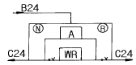
- 21NR
- 21RR
- 21KR
- 21WLR
(정답률: 알수없음)
47. 입환표지에 대한 설명 중 옳은 것은?
- 출발신호 현시후 현시하며 주신호기이다.
- 진행신호 현시후 조차원의 유도가 있어야 내방으로 진입이 가능하다.
- 무유도 표시등이 첨장되어 있다.
- 진행신호 현시후 입환표지 내방으로 진입이 가능하다.
(정답률: 알수없음)
48. 폐전로식 궤도회로의 기능 설명이 아닌 것은?
- 신호용 전기회로가 상시 폐로되어 있다.
- 전기회로가 상시 개방되어 전류가 흐르지 않는다.
- 차량이 그 구간에 들어오면 계전기는 무여자가 된다.
- 전원 고장시는 계전기가 무여자로 되어 안전하다.
(정답률: 알수없음)
49. 1kHz 부근의 가청 주파수를 반송파로 하여 수 십(10)Hz의 신호 주파 전류로 변조한 것을 궤도로 전송하여 사용하는 방식은?
- 부호 궤도회로
- A.F 궤도회로
- 교류 궤도회로
- 직류 궤도회로
(정답률: 알수없음)
50. 관계 선로전환기를 포함하는 궤도회로를 열차가 완전히 통과할 때까지 계속 쇄정시키는 것은?
- 접근쇄정
- 보류쇄정
- 진로쇄정
- 조사쇄정
(정답률: 알수없음)
51. 신호 본드의 종류가 아닌 것은?
- PL(A)형
- PL(B)형
- CV2형
- WV형
(정답률: 알수없음)
52. 3위식 신호방식(적,황,녹색)에서 최소 운전시격은 몇 sec 인가? (단, 폐색구간길이 S1=S2=2000m, 열차길이 ℓ =100m, 열차 속도 V=80km/h, 신호확인거리 C=60m, 열차가 신호기1 을 통과하여 신호기 3 이 황색에서 녹색으로 바뀌어지기까지의 시간 t=80sec이다.)
- 267.2
- 275.6
- 296.2
- 298.6
(정답률: 알수없음)
53. ATS-S형 지상자의 선택도 Q를 식으로 나타내면?
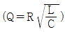
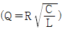
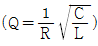
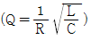
(정답률: 알수없음)
54. 신호장에 가까이 있으며 많은 철관장치의 방향을 바꾸기 위하여 설치되는 것은?
- 디플렉숀 바(deflection bar)
- 직각 크랭크(crank)
- 파이프 콤펜세이터(pipe compensator)
- T 크랭크(crank)
(정답률: 알수없음)
55. "ATS"는 무엇을 의미하는가?
- 차내 경보장치
- 자동열차정지장치
- 자동열차제지장치
- 자동열차운전장치
(정답률: 알수없음)
56. CTC 장치에서 열차번호 표시장치의 표시 단위로 옳은 것은?
- 3단위
- 4단위
- 5단위
- 6단위
(정답률: 알수없음)
57. 단락감도를 높이는 것은?
- 동작전압과 낙하전압의 차가 적은 계전기를 사용
- 계전기 전압을 높게 조정
- 동작전압과 낙하전압의 차가 큰 계전기를 사용
- 계전기 코일의 임피던스가 낮은 것을 사용
(정답률: 알수없음)
58. B.T 방식의 전기철도 흡상선의 설치 위치는? (단, 궤도회로방식은 복궤조식 궤도회로이다.)
- 귀선(歸線)레일 위
- 임피던스 본드의 송전측 레일 위
- 임피던스 본드의 착전측 레일 위
- 임피던스 본드의 중성점
(정답률: 알수없음)
59. 신호용 정류기에서 정류회로의 무부하 전압이 330V이고, 전부하 전압이 320V라면 전압변동률은 약 몇 % 인가?
- 2.2
- 2.5
- 2.8
- 3.1
(정답률: 알수없음)
60. 경부선 CTC 구간에서 플렛홈에 도착선 열차의 종별, 행선 및 출발시간을 시각적으로 표시하는 장치는?
- PＩ
- TDE
- RC
- ATC
(정답률: 알수없음)
4과목: 회로이론
61. 어떤 제어계의 임펄스 응답이 sin t 일 때에 이 계의 전달함수를 구하면?
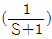
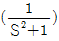
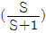
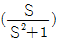
(정답률: 알수없음)
62. 비정현파 기전력 및 전류의 값이 V=100sinω t-50sin(3ω t+30° )+20sin(5ω t+45° )[V] i=20sin(ω t+30° )+10sin(3ω t-30° )+5cos5ω t[A] 이라면 전력[W]은?
- 763.2
- 776.4
- 785.8
- 795.6
(정답률: 알수없음)
63. ε-at sin ω t 의 라프라스 변환은?
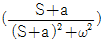
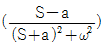
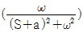
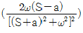
(정답률: 알수없음)
64. 대칭 n상에서 선전류와 환상전류 사이에 위상차는?
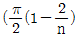
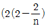
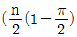
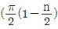
(정답률: 알수없음)
65. L-C 직렬회로에 직류 기전력 E를 t=0에서 갑자기 인가할때 C에 걸리는 최대 전압은?
- E
- 1.5E
- 2E
- 2.5E
(정답률: 알수없음)
66. 3상 회로에 있어서 대칭분 전압이
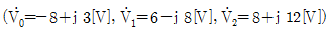
일 때 a상의 전압[V]는?- 6+j7
- 8+j6
- 3+j12
- 6+j12
(정답률: 알수없음)
67. 다음과 같은 회로의 영상임피던스 Z01 과 Z02는 각각 몇 [Ω]인가?
- 9, 5
- 4, 5
- 6, 10/3
- 5, 11/3
(정답률: 알수없음)
68. 대칭 3상 Y형 부하에서 1상당의 부하 임피던스가
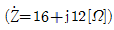
이다. 부하전류가 10[A]일대 이 부하의 선간 전압 [V]은?- 200
- 245
- 346
- 375
(정답률: 알수없음)
69. 대칭 3상 교류에서 순시값의 벡터 합은?
- 0
- 40
- 0.577
- 86.6
(정답률: 알수없음)
70.
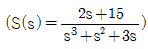
일 때 f(t)의 최종값은 ?- 2
- 3
- 5
- 15
(정답률: 알수없음)
71. 그림과 같은 회로에 대한 설명으로 잘못된 것은?
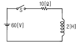
- 이 회로에 시정수는 0.2[s]이다.
- 이 회로의 정상전류는 6[A]이다.
- 이 회로의 특성근은 -5이다.
- t=0에서 직류전압 60[V]를 제거할 때 t=0.4[s]시각의 회로의 전류는 5.26[A]이다.
(정답률: 알수없음)
72. 주기적인 구형파의 신호는 그 주파수 성분이 어떻게 되는가?
- 무수히 많은 주파수의 성분을 갖는다.
- 주파수 성분을 갖지 않는다.
- 직류분만으로 구성된다.
- 교류합성을 갖지 않는다.
(정답률: 알수없음)
73. 다음 4단자망의 4단자 정수 중 C 정수는?
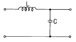
- 1
- jω L
- jωC
- 1+j(ωL+ωC)
(정답률: 알수없음)
74. R-L-C 직렬회로에서 일정 각 주파수의 전압을 가하여 R만을 변화시켰을 때 R의 어떤 값에서 소비전력이 최대가 되는가?
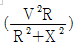
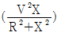
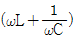
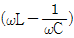
(정답률: 알수없음)
75. 그림과 같은 회로에서 단자 ab 사이의 합성 저항은?
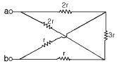
- r
- 3/2·r
- 1/2·r
- 3r
(정답률: 알수없음)
76. 그림과 같은 R 과 C의 병렬회로에서 주파수가 일정하고 C가 0에서 ∞ 까지 변할 때 합성 임피던스
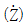
의 궤적은 어떻게 되는가?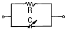
- 원점을 지나는 반직선이다.
- 원점을 지나지 않고 실수축에 평행인 반직선이다.
- 원점을 지나는 반원이다.
- 원점을 지나지 않는 반원이다.
(정답률: 알수없음)
77. 키르히호프 전압법칙 설명 중 잘못 된 것은?
- 회로소자의 선형, 비선형에 관계없이 적용된다.
- 집중 정수회로에 적용된다.
- 선형 소자만이 이루어진 회로에 적용된다.
- 회로소자의 시변, 시불변성에 관계없이 적용된다.
(정답률: 알수없음)
78. R[Ω]의 저항 3개를 Y로 접속하고 이것을 200[V]의 평형 3상 교류 전원에 연결할 때 선전류가 20[A]가 흘렀다. 이 3개의 저항을 Δ 로 접속하고 동일전원에 연결하였을 때의 선전류[A]는?
- 약30
- 약40
- 약50
- 약60
(정답률: 알수없음)
79. 용량 30[kVA]의 단상 변압기 2대를 V결선하여 역률0.8, 전력20[kW]의 평형 3상부하에 전력을 공급할 때 변압기 1대가 분담하는 피상 전력[kVA]은 얼마인가?
- 14.4
- 15
- 20
- 30
(정답률: 알수없음)
80. 314[mH]의 자기 인덕턴스에 120[V], 60[Hz]의 교류전압을 가하였을 때 흐르는 전류[A]는?
- 10
- 8
- 1
- 0.5
(정답률: 알수없음)
따라서 -3dB 대역폭은 20kHz/Q = 0.2kHz = 200Hz 이다.
하지만 이 문제에서는 단위를 kHz로 주어졌으므로 0.2kHz = 200kHz 로 변환해야 한다.
따라서 주파수 대역폭은 2000kHz ± 100kHz = 1900kHz ~ 2100kHz 이다.
따라서 정답은 "1900∼2100" 이다.